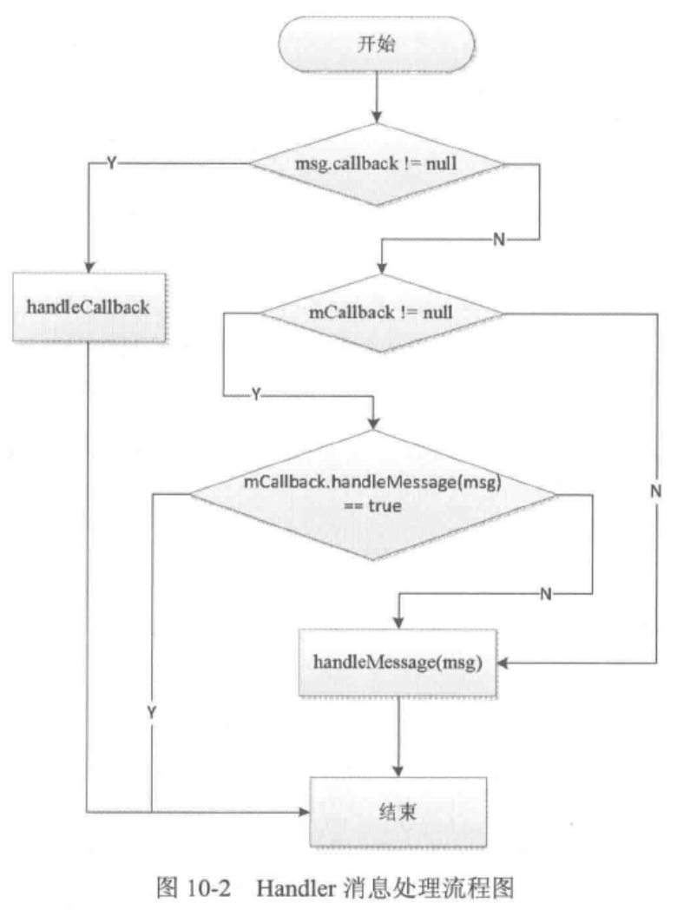

结合 官方文档 阅读《Android 开发艺术探索》时所做的学习笔记。本篇记录第 8、10、11 章：Window、线程和线程池、消息机制 相关。
理解 Window 和 WindowManager
Quick Facts
- Window 是一个抽象类，它的具体实现是 PhoneWindow。
- 我们可以使用 WindowManager 创建一个 Window，WindowManager 是外界访问 Window 的入口。
- Window 的实现位于系统的 WindowManagerService 中，所以 WindowManager 和 WindowManagerService 的交互是一个 IPC 过程。
- Android 中所有的 View 都是通过 Window 来呈现的，不管是 Activity、Dialog 还是 Toast，它们的 View 都是附加在 Window 上的，Window 是 View 的直接管理者。点击事件也是通过 Window 传递给 DecorView 再传递给我们的 View，setContentView 本质也是通过 Window 来添加我们的 View 到 DecorView 上。
Window & WindowManager
通过 WindowManager 添加 Window：
1 | windowManager.addView(View view, ViewGroup.LayoutParams params) |
这里的 LayoutParams 有两个重要的参数： flags 和 type。
type 表示 Window 的类型，Window 分为三种类型，最基本的是 application window，层级范围是 199，表示普通应用的 Window；第二层是 sub-window，子 Window 的层级范围是 10001999，必须依附于父 Window 才能存在，比如常见的 Dialog；最后是 system window，层级范围 2000~2999，表示系统级别的 Window，比如 状态栏、导航栏、系统提醒、Toast 等。层级高的 Window 总是会覆盖层级低的。
如果我们想要显示系统级别弹窗，只要指定 type 为 TYPE_APPLICATION_OVERLAY 就可以了，不过使用系统级别 Window 需要额外申请 android.permission.SYSTEM_ALERT_WINDOW 权限。
flags 表示 Window 的属性，通过组合使用这些属性，我们可以定制 Window 的显示方式。常用的有：
- FLAG_NOT_TOUCH_MODAL，只处理 Window 所在 View 区域内的点击事件，之外的事件会被传递给下一层的 Window。
- FLAG_NOT_FOCUSABLE，表示 Window 不需要获取焦点，也不需要接收输入事件。默认会开启 FLAG_NOT_TOUCH_MODAL。
- FLAG_SHOW_WHEN_LOCKED，显示在锁屏界面之上。
其他的 flags 见：WindowManager.LayoutParams
除了 addView 之外，常用的方法还有：
1 | public void updateViewLayout(View view, ViewGroup.LayoutParams params); |
Window 的内部机制
Window 是一个抽象的概念，每一个 Window 对应一个 View 和一个 ViewRootImpl，Window 和 View 通过 ViewRootImpl 来建立联系，因此 Window 实际并不存在，它是以 View 的形式存在的。
WindowManagerImpl 并没有直接实现 Window 的三大操作，而是交给 WindowManagerGlobal 处理。
Window 的创建过程
前面说到过所有的 View 都是通过 Window 来呈现的，Window 是 View 的直接管理者，例如 Activity、Dialog、Toast 等的 View 都对应着一个 Window，所以理解 Window 的创建过程也就十分重要。
<待补充>
Android 的线程和线程池
Android 中的线程分为主线程和子线程，主线程也叫 UI 线程，主要用于处理用户输入以及界面交互，主线程中不能进行任何耗时操作，比如网络请求等，只能放到子线程中处理，而子线程中也不能进行更新 UI 的操作。
Android 中可以扮演子线程的角色有很多，比如 AynscTask 和 IntentService，它们底层依赖的都是线程或线程池，另外 HandlerThread 也是一种特殊的线程。
主线程和子线程
主线程指当前进程所拥有的线程，Java 中默认情况下一个进程只有一个线程，那就是主线程 (main() 方法所在的线程)，除了主线程之外的其他线程都是子线程，也叫工作线程。我们一般只在工作线程中执行耗时操作。
Android 沿用了 Java 的线程模型，也分为主线程和子线程，在主线程或者叫 UI 线程中运行四大组件以及处理用户界面的交互，在子线程中执行网络请求、I/O 等耗时操作。
Android 中的线程形态
AsyncTask
AsyncTask 是一种轻量级的异步任务类，它可以在线程池中执行后台任务，然后把执行的进度和结果传递给主线程并更新 UI。从实现上看，AsyncTask 封装了 Thread 和 Handler，Reference 中也指出它不适合执行特别耗时的后台任务（最长不超过几秒钟）。
使用 AsyncTask 时需要注意以下一些问题：
- AsyncTask 类必须在主线程中加载，AsyncTask 对象必须在主线程中创建，execute 方法必须在主线程中调用；
- 不能在程序中直接调用
onPreExecute(),onProgressUpdate(),doInBackground(),onPostExecute()方法； - 一个 AsyncTask 只能执行一次
execute()方法； - AsyncTask 默认是串行执行的，我们可以使用 AsyncTask 的
executeOnExecutor()来并行执行； - AsyncTask 未来会被弃用，所以不再推荐使用，对于一些简单的后台任务可以使用
java.util.concurrent包下提供的类替代，例子见：What are the alternatives?
推荐阅读：Using AsyncTask
HandlerThread
HandlerThread 顾名思义就是一种可以使用 Handler 的 Thread，它的实现很简单，就是在 run() 方法中通过 Looper.prepare() 创建消息队列，并通过 Looper.loop() 开启消息循环，这样就可以在当前线程中使用 Handler 了。HandlerThread 的具体使用场景是 IntentService。
IntentService
IntentService 是常用的执行后台任务的 Service，一般我们只要继承并实现 onHandleIntent() 方法就可以了。而且 IntentService 会在任务执行完毕后自动停止。
具体而言，每当我们调用一次 startService() 的时候，onHandleIntent() 都会被调用，只有当所有的任务都结束了，该 IntentService 才会调用 stopSelf() 停止服务。另外，因为它是 Service，所以优先级比一般的子线程高很多。
Android 中的线程池
线程池具有以下优点：
- 线程重用，避免线程的频繁创建与销毁带来的额外开销；
- 能有效控制最大并发数，避免大量线程间相互抢占资源带来的阻塞；
- 能对线程进行管理，比如定时执行、指定间隔循环执行等。
ThreadPoolExecutor
ThreadPoolExecutor 实现了 Executor，我们可以通过它来配置和管理线程池（虽然我们一般使用 Executors 工厂方法来创建）。它的构造方法提供了很多的配置参数以及回调方法：
1 | ThreadPoolExecutor(int corePoolSize, int maximumPoolSize, |
- corePoolSize: 核心线程数，线程池会自动调整线程数量。例如，当新的任务创建时，线程池中的线程少于核心线程数，那么，即使有线程处于闲置状态，线程池依旧会创建新线程去处理任务；注意这个参数和 maximumPoolSize 的区别，当线程数量达到最大线程数时，后续新任务会被阻塞。
- keepAliveTime: 非核心线程的闲置时长，超过时长的非核心线程会被回收。我们可以使用
allowCoreThreadTimeOut(true)来回收核心线程。 - unit: keepAliveTime 的时间参数 TimeUnit。
- workQueue: 线程池中的任务队列，即通过
execute()方法提交的 Runnable 对象，根据情景使用不同类型的 BlockingQueue。 - threadFactory: 为线程池提供新线程，它是一个接口，只需要实现
Thread newThread(Runnable r)方法。 - handler: 当线程池无法执行新任务时，ThreadPoolExecutor 会调用此 handler 的
rejectedException()方法来通知调用者，它有几个可选值：AbortPolicy、CallerRunsPolicy、DiscardPolicy 和 DiscardOldestPolicy，其中，AbortPolicy 是默认值，它会抛出 RejectedExecutionException。
线程池的分类
FixedThreadPool
它是一种线程数量固定的线程池，只有核心线程，而且核心线程不会被回收，也没有超时机制，任务队列也没有大小限制。
1 | public static ExecutorService newFixedThreadPool(int nThreads) { |
使用场景：它适用于需要快速响应请求的任务。
CachedThreadPool
它是一种线程数量不定的线程池，只有非核心线程，线程数量近乎无限大 (Integer.MAX_VALUE)，意味着不需要任务队列，因为任何新的任务都会立即被处理（要么被闲置线程处理要么会创建新线程处理），并且对于闲置线程有超时机制，时长 60 秒。当所有线程都因为闲置而被停止时，线程池几乎不占用系统资源。
1 | public static ExecutorService newCachedThreadPool() { |
使用场景：它适用于执行大量的、耗时较少的任务。
ScheduledThreadPool
它是一种核心线程数量固定而非核心线程数量没有限制的线程池，非核心线程闲置时会被回收。
1 | public static ScheduledExecutorService newScheduledThreadPool(int corePoolSize) { |
使用场景：它适用于执行定时任务以及具有固定周期的重复性任务。
SingleThreadExecutor
它只有一个核心线程的线程池，它确保所有任务都在同一个线程中按顺序执行。
1 | public static ExecutorService newSingleThreadExecutor() { |
使用场景：它适用于任务之间不需要线程同步的任务。
Android 的消息机制
概述
Android 消息机制主要指 Handler 及其所依赖的 MessageQueue 和 Looper 的工作过程。前面说过，Android 中不允许在子线程中访问 UI（通过 ViewRootImpl 的 checkThread() 方法），所以我们有时会通过 Handler 更新 UI。
至于为什么不允许在子线程中访问 UI，主要是因为 UI 控件不是线程安全的，而且也无法为所有 UI 控件加上锁机制，因为加锁后存在两个主要的缺点：1、UI 的访问逻辑会变复杂；2、降低执行效率，容易引起卡顿。
Android 消息机制的分析
Handler 的工作流程是这样的：
- 首先，Handler 在创建之后，会利用当前线程的 Looper 来构建内部的消息循环系统（UI 线程即 ActivityThread 在创建时就会初始化 Looper，所以可以直接使用 Handler）。如果当前线程不存在 Looper 则会抛出异常。
- 然后我们可以通过 Handler 的
sendXXX()方法发送 Message，Message 会被添加到 MessageQueue 中，Looper 会不断从 MessageQueue 中取出 Message 并处理。也可以通过postXXX()方法将一个 Runnable 投递到 Looper 中处理（Runnable 会被转换成 Message 中的 callback，然后添加到 MessageQueue 中，过程和sendXXX()方法一样）。 - 最终，Message 中的 Runnable 或者
handleMessage()方法会被调用。
这里我们可以从下往上依次看消息机制中各个组成部分的原理。
ThreadLocal 的工作原理
ThreadLocal 是一个线程内部的数据存储类，通过它可以在指定的线程中存储数据，数据存储之后，只有在指定的线程中才可以获取到存储的数据。也就是说，它可以在多个线程中互不干扰地存储和修改数据。
简单来说，当我们调用 ThreadLocal 的 set 和 get 方法时，它们所操作的对象都是当前线程的 localValues 对象的 table 数组，因此在不同线程访问同一个 ThreadLocal 的 set 和 get 方法时，它们对 ThreadLocal 所做的读写操作都仅限于各自线程的内部，所以各线程可以互不干扰。
关于细节请阅读 ThreadLocal 源码。
MessageQueue 的工作原理
MessageQueue 主要包含两种操作，插入 (enqueueMessage) 和读取 (next) Message。它虽然叫 Queue，但内部其实是一个单链表的结构，我们知道链表在插入和删除上比较有优势。
具体实现请看源码：enqueueMessage() 和 next()。
1 | /* 简化了细节 */ |
可以看到 next() 方法是一个死循环，当有新消息进入的时候，next() 方法会返回该消息并从链表中移除，当没有消息时，会一直阻塞直到收到新消息。
Looper 的工作原理
Looper 主要用于消息循环，它会不停查看 MessageQueue 中是否有新消息，有则处理，没有则一直阻塞。
当调用 Looper.prepare() 之后，它内部会创建一个新的 MessageQueue，然后获取当前线程并保存在的 ThreadLocal 中，然后当我们调用 Looper.loop() 方法后，该 Looper 就会开始不停地从 MessageQueue 中读取 Message。它是一个死循环，除非 MessageQueue 的 next() 方法返回 null，否则就不会跳出循环。
当 MessageQueue 返回了新消息，Looper 就会通过调用 msg.target.dispatchMessage(msg) 处理这条消息。这里的 msg.target 是一个 Handler 对象，所不同的是，这里的 dispatchMessage() 方法是在创建 Handler 所使用的 Looper 中执行的，所以就成功将代码逻辑切换到指定的线程中去执行了。
1 | public static void prepare() { |
关于细节请阅读 Looper 源码。
另外，需要注意的是，Looper 在被创建后，我们应该调用 quit() 或者 quitSafely() 退出，否则，该子线程就会一直处于等待状态。当然也有一些特殊情况，比如如果该线程如果存在期和应用存在期一样，而且也不持有 View 的强引用，那就没必要退出。这种情况下的 Looper 所在的线程一般用作多用途的 HandlerThread，比如用于处理一些需要后台运行的任务。而除此之外的其他情况，如果线程持有 View，那么就应该及时退出关闭 looper，否则会造成内存泄露。详见：where to quit looper?
Handler 的工作原理
Handler 的主要职责是发送和接收 Message。消息的发送主要通过一系列 postXXX() 方法或 sendXXX() 方法，最终都是通过 enqueueMessage() 向 MessageQueue 中添加一条消息，最终 Looper 循环到消息后再交由 Handler 的 dispatchMessage() 方法中处理，再在其中调用 Callback 或者我们实现的 handleMessage() 方法。

另外，当我们用默认构造函数创建 Handler 时，它会调用以下构造函数：
1 | public Handler(Callback callback, boolean async) { |
这就是为什么如果我们没有调用 Looper.prepare() 而直接使用 Handler 会报错了。
关于细节请阅读 Handler 源码。
主线程的消息循环
在消息机制的分析一节提到过，Android 的主线程就是 ActivityThread，其入口方法是 main() 方法，它会调用 Looper.prepareMainLooper() 将当前线程标记为主线程，并创建 Looper 和 MessageQueue，因此我们在主线程中直接就可以创建 Handler。随后，主线程的 Looper 开始循环了之后，ActivityThread 的内部还维护了一个 Handler 的子类 H 用来和 MessageQueue 进行交互，主要用于基本组件的启动和停止等过程。
1 | // ActivityThread.java |
其工作过程如下：ActivityThread 通过 ApplicationThread 和 AMS 进行 IPC，AMS 处理完请求后通过回调 ApplicationThread 中的 Binder 方法，然后 ApplicationThread 会通过 H 发送消息，H 接收到消息后再将返回的数据放到 ActivityThread 中执行后续的操作。
系列文章
- Android 开发艺术探索学习笔记（一） - 第 1 章：生命周期和启动模式
- Android 开发艺术探索学习笔记（二） - 第 2 章：IPC 机制
- Android 开发艺术探索学习笔记（三） - 第 3~5 章：View 事件机制等
- Android 开发艺术探索学习笔记（四） - 第 6, 7, 12 章：Drawable，动画，Bitmap
- Android 开发艺术探索学习笔记（五） - 第 8, 10, 11 章：Window，线程和线程池，消息机制
- Android 开发艺术探索学习笔记（六） - 第 13~15 章：综合技术，JNI 和 NDK，性能优化